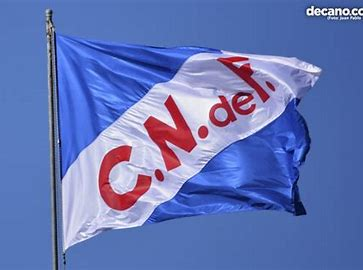
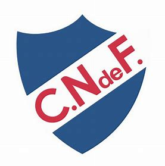
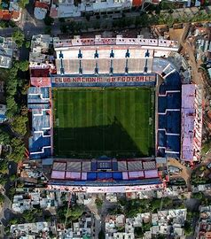

Fundación
La iniciativa fue de parte de un grupo de jovenes estudiantes de los equipos Uruguay Athletic Club y Montevideo Football Club. El club fue fundado un 14 de mayo de 1899, en Montevideo, Uruguay
Historia del club
La iniciativa fue de parte de un grupo de jovenes estudiantes de los equipos Uruguay Athletic Club y Montevideo Football Club. El club fue fundado un 14 de mayo de 1899, en Montevideo, Uruguay
El club posee diversos apodos relacionados a su historia, apodos como:
Este apodo viene desde hace mucho tiempo y tiene que ver con una cualidad de la camiseta, la cual en el lugar en el que el día de hoy se ubica el escudo se encontraba la bandera que tenia la particularidad de ser un pequeño bolsillito
Este apodo es muchisimo más facil de explicar, basicamente viene de los colores representativos del club que como el apodo lo dice son tres, por eso "tricolor", los colores son el blanco color que desde 1902 es el color principal de la camiseta, el azul y el rojo color de la primera camiseta del club
El escudo del club apareceria en el año 1925 pero antes de este la insignia representativa del club era su bandera. El 23 de mayo de 1902 se creó la bandera social de la Institución. En la sesión de Directiva del 16 de mayo de 1902, el Vicepresidente Jorge Ballestero, había propuesto crear una bandera para el club. En la siguiente sesión del día 23 de mayo, el Secretario Domingo Prat sugirió los colores azul, blanco y rojo punzó y Ernesto Caprario presentó un croquis, de una bandera de color azul, con una franja blanca cruzada y la inscripción en letras rojas “C. N. de F”, el cual fue aprobado por todos.
El escudo seria utilizado por primera vez en el año 1925 en una gira por Europa, como una representación de la bandera pero en forma de escudo, aunque seria oficializado en el año 1926 agregandole tres puntas en la parte superior
 Desde el 25 de mayo de 1900 el estadio del club es el llamado "Gran Parque Central", reconocido por ser el estadio donde se jugo el primer partido de los mundiales de fútbol. Este esta ubicado en el Barrio de la Blanqueada, Montevideo. Antes de que se construyera el estadio en el terreno se ubicaba la conocida Quinta de la Paraguaya donde se llevo a cabo una de las Asambleas mas importantes de la Revolución Oriental en la cual el general Jose Gervacio Artigas fue nombrado Jefe de los Orientales. El estadio posee 4 reconstrucciones en los años: 1911, 1944, 1974 y 2005.
El Gran Parque Central posee 4 tribunas, 3 para la hinchada local y 1 para los visitantes
Esta es la tribuna que posee el precio más bajo de las entradas y es en la que se ubica la "La Banda del Parque" (Nombre con el que se conoce a la hinchada del club). La tribuna lleva este nombre por el historico mediocampista del club Abdón Porte, que más que un jugador era un hicha más. (Dato Curioso: este era tan hincha del club que al ver bajar su rendimiento dentro de la cancha con apenas 25 años decidio quitarse la vida con un disparo en el centro del estadio)
Se podria decir que es la tribuna más adecuada para ir a ver en familia, al no poseer un precio muy alto y a diferencia de la Abdón Porte es mucho más tranquila. Esta posee este nombre por el gran goleador argentino nacionalizado uruguayo Atilio García, tan goleador era este que hoy en día es el maximo goleador del club con 466 goles. (Dato Curioso: un 14 de diciembre de 1941 Nacional consiguio una hazaña historica, la conocida como "La Maxima Goleada Clasica" fue el partido en el que Nacional se enfrento a Peñarol (Eterno rival del club) derrotandolo por una goleada historica de 6 a 0, siendo esta la goleada mas grande en la historia del clasico uruguayo. Atilio fue parte de esta hazaña anotando 2 de los 6 goles de Nacional)
Esta es la tribuna, al contrario de la Abdón Porte, con el precio mas alto, por la razon de que se encuentra del lado donde esta ubicado el tunel por el que ingresan los jugadores y de los bancos de suplentes. Lleva este nombre por uno de los primeros y mas recordados presidentes del club José María Delgado. (Dato Curioso: en el momento del fallecimiento de Abdón este le escribio una carta a José ya que tenia una gran relación con el, en la carta tambien se refirio a su querido Nacional y el lugar donde queria ser enterrado)
«Querido Doctor José María Delgado. Le pido a usted y demás compañeros de Comisión que hagan por mí como yo hice por ustedes: hagan por mi familia y por mi querida madre. Adiós querido amigo de la vida.» —Abdón Porte
Esta es la tribuna para las hinchadas visitantes. Posee este nombre por el historico jugador Héctor Scarone, este era tan bueno que fue nombrado como el mejor jugador del mundo en su momento. (Dato Curioso: Héctor tenia un hermano que tambien jugo en Nacional llamado Carlos Scarone, que aunque suene extraño fue el creador de uno de los apodos del club rival. Esto surgio por una pelea familiar con su padre José Scarone un inmigrante italiano que se habia encariñado con Peñarol y cuando se entero de que Carlos iba a jugar en Nacional le reprocho a su hijo por esto y este le contesto diciendole "A que me iba a quedar a magiare merda", que en español significa a comer mierda la palabra mangiare se fue deformando y Peñarol la fue adaptando hasta convertirse en el apodo mas reconocido del club, "El Manya")
La camiseta del club a sido fabricada por muchisimas marcas como: Bullit, Adidas, Topper, Puma, Nanque, Fila y desde el 2006 hasta la actualidad el fabricador es Umbro
El color predominante de esta desde 1902 ha sido el blanco ademas de distintos detalles en rojo y azul, como, cuellos, puños y los hombros, tambien hace mucho tiempo esta poseia botones. En el principio era totalmente blanca aunque mas tarde apareceria la bandera como un bolsillo y aún más tarde la bandera se cambiaria por el escudo
Pero Antes del color blanco desde la fundación del club hasta el cambio al blanco, la camiseta era de un color rojo punzó, con cuello y puños azules
Con 165 títulos es el club con mas títulos oficiales en el mundo. Dentro de la inmensa cantidad de títulos resaltan 49 Campeonatos Uruguayos, 3 Copas Libertadores, 3 Intercontinentales y muchisimos más
Este numero esta relacionado con el minuto en el que Alvaro "Chino" Recoba, jugador historico del club y actual entrenador, anoto el gol de tiro libre que puso el marcador 2 a 1, este hecho ocurrio en el transcurso de la fecha 12 del Torneo Apertura en el año 2014 el dia 9 de noviembre en el Estadio Centenario, partido en el que Nacional se enfrentaba a Peñarol en el reconocido mundialmente Clasico uruguayo, el partido acabo 2 a 1 y es recordado como una de las mejores remontadas clasicas de la historia.
La hinchada o barra brava del club es reconocida como la Banda del Parque nombre que proviene del estadio del club.
Otra de las razones por la que el club es reconocido mundialmente es por la palabra hincha. Esta palabra utilizada en varias partes del mundo fue creada a base de uno de los utileros del club, el gran Prudencio Miguel Reyes. El futbol antes era un deporte que se veía sentado y serio, pero Prudencio a diferencia de los demas corria por fuera de la cancha alentando a los jugadores, por este comportamiento extraño la gente se preguntaba quien era el, y la respuesta que obtenian era que el era el hincha, el hincha pelotas del club. A base de esto a la palabra hincha se le dio uso para aquellas personas que apoyaban a un club.
Alejo César 08/04/2024